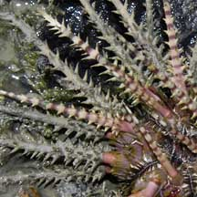
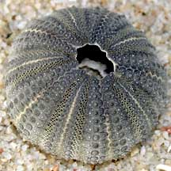
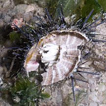
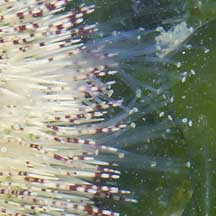
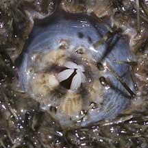
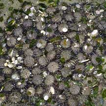
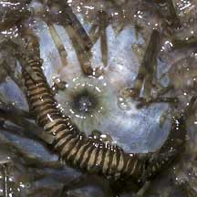

|
|
| echinoids text index | photo index |
| Phylum Echinodermata | Class Echinodea |
| Sea
urchins updated Apr 2020
Where seen? Sea urchins are sometimes seen especially on our undisturbed shores. But even on a well used shore such as Changi, they can be seasonally abundant. What are sea urchins? Sea urchins belong to Phylum Echinodermata and Class Echinoidea which includes heart urchins and sand dollars. Features: Like other echinoderms, sea urchins are symmetrical along five axes, have tube feet and spines. And wow, do they have spines! Sea urchins are usually covered with lots of long, sharp spines that deter most predators. The spines also tend to break off inside their victim's flesh. Some sea urchins have venomous spines that can inflict serious pain. Some sea urchins also have tiny jaw-like structures on stalks called pedicellariae. The main function of these is to keep the body of the sea urchin free of debris and parasites. They may also be used to collect food. Some sea urchins have larger venomous pedicellariae which painfully sting large creatures and can paralyse smaller ones. |
 Some have very long slender spines. Cyrene Reef, Jun 08 |
 Others have thick spiky spines. Beting Bronok, Jun 03 |
 Skeleton of a dead sea urchin Changi, May 02 |
| Test of Strength: Sea urchins
have an internal skeleton (called the test) formed out of large ossicles
fused together in plates. These form a pattern that resembles a sliced
orange, in multiples of five. The test is a rigid, hollow sphere.
To grow larger, each ossicle is enlarged, and new ossicles added near
the anus. Splendid spines: There are little knobs all over the outside of the test. The spines move on these little knobs, articulating somewhat like the ball-and-socket joint of our knees. Sea urchins usually have two kinds of spines; one larger and/or longer, and the other smaller. Like other echinoderms, sea urchins have mutable connective tissue as well as muscles that move the spines. These moveable spines not only protect the sea urchin, but are also used for walking. Sea urchins can move in any direction because they are spherical. The spines can also be locked in place to wedge themselves in a safe hiding place. Where do the spines of a dead sea urchin go? Like us, sea urchins have a skin covering the spines and the test. When a sea urchin dies, the skin decays rapidly and all the spines fall off, leaving only the spherical test. The inside of a sea urchin is mostly empty except during mating season when it is full of sperm or eggs. Tube Feet Too! Like other echinoderms, sea urchins also have tube feet. If we go back to the image of the test as a sliced orange, the tube feet emerge from holes along five 'slices'. Like other echinoderms, the tube feet are operated hydraulically with the water vascular system that all echinoderms have. These tube feet end in suckered discs that can stick to things and thus allow the animal to move, climb up vertical surfaces, dig or collect food. The tube feet are also used to sense chemicals, breathe, as well as excrete wastes! Some sea urchins 'carry' shells, seaweed and other debris. This behaviour may help camouflage them or shield them from sunlight. |
 A recently broken urchin. Changi, Jul 11 |
 Long tube feet. Changi, Jun 05 |
 Aristotle's lantern. Changi, Jun 05 |
| Toothy Urchins: The mouth of a
sea urchin is on the underside facing the ground. They have a complex
jaw structure made of a circle of five plates that meet in the middle
to form a beak-like structure. The entire structure can be extended
outwards to chomp on their food. It is called the Aristotle's Lantern
after the Greek philosopher Aristotle who first described it. New
'teeth' grow to replace those that are worn down. A sea urchin's anus
is on the opposite side of its mouth, on the upperside of its body. What do they eat? Most sea urchins graze on seaweed, detritus from hard surfaces or on immobile creatures such as sponges or encrusting animals. The crunching of feeding sea urchins can be very loud! As sea urchins scrape on algae and other encrusting stuff growing on hard surfaces, their hollow bodies amplify the sound so that they contribute to most of the noise on some reefs. This noise may have a role in reef health! A study has found that reef fish and crab species swim towards underwater sound, thus noise generated around the coast plays an important role in guiding baby fish and crustaceans to a suitable habitat in which they can settle. Here's more about this study. Baby sea urchins: Sea urchins have separate genders and are usually either male or female. They practice external fertilisation, releasing eggs and sperm simultaneously into the water. Each female sea urchin can release millions of eggs at a time! This is probably why we sometimes see many sea urchins gathered together.  Sea urchins undergo metamorphosis and their larvae look nothing like
their adults. The form that first hatches from the eggs are bilaterally
symmetrical and free-swimming, drifting with the plankton. At this
stage, they have several long 'arms' which are believed to funnel
food particles into the central mouth. They eventually settle down
and develop into a more sea urchin-like shape. Sea urchins undergo metamorphosis and their larvae look nothing like
their adults. The form that first hatches from the eggs are bilaterally
symmetrical and free-swimming, drifting with the plankton. At this
stage, they have several long 'arms' which are believed to funnel
food particles into the central mouth. They eventually settle down
and develop into a more sea urchin-like shape. |
 Sometimes gathered in large groups. Changi, Jul 04 |
 Sometimes gathered in large numbers. Cyrene Reef, Apr 07 |
 Some sea urchins 'carry' stuff. Beting Bronok, May 06 |
| Prickly home: Sea urchins with
their prickly spines offer a safe hiding place for various animals.
Including some fishes such as the Razorfishes (Family Centriscidae) and a strange worm-like
thing often found around the mouth of some sea urchins. Sometimes,
tiny colourful brittle stars are seen on the spines
of some sea urchins. Role in the habitat: Grazing sea urchins keep seaweed growth in check. An excessive seaweed 'bloom' can deplete oxygen, smother life forms and upset the ecological balance. Thus sea urchins help to maintain the balance. If there are too many seaweeds on a reef, for example, baby corals can't find a place to settle down. More about the role of seaweeds, baby corals and animals that eat seaweeds on the wild shores of singapore blog Despite their spines, sea urchins are preyed upon by many creatures including crabs, fishes and birds. |
 Hole with 'burn' mark suggests the urchin was attacked by a Helmet snail. Changi, May 08 |
 Worm-like animal often seen around the mouth of the Black sea urchin Changi, Jun 05 |
 Fishes among the spines of an urchin. Terumbu Hantu, Jun 13 Photo shared by Loh Kok Sheng on his blog. |
| Humans uses: The roe (egg mass)
of some sea urchins are relished as a Japanese delicacy and sea urchins
are commercially harvested for this reason in various parts of the
world. Sea urchins have been extensively studied to better understand
egg fertilisation and embryo development for other applications. This
is because their eggs are large and easy to study. Sea urchins are
also harvested for their attractive skeletons which are made into
souveniers. Status and threats: In Singapore, the main threat is habitat loss due to reclamation or human activities along the coast that pollute the water. Like other creatures of the intertidal zone, they are affected by human activities such as reclamation and pollution. Trampling by careless visitors also have an impact on local populations. |
| Some Sea urchins on Singapore shores |


| Sea
urchins recorded for Singapore from Wee Y.C. and Peter K. L. Ng. 1994. A First Look at Biodiversity in Singapore. *additions from Lane, David J.W. and Didier Vandenspiegel. 2003. A Guide to Sea Stars and Other Echinderms of Singapore. in red are those listed among the threatened animals of Singapore from Davison, G.W. H. and P. K. L. Ng and Ho Hua Chew, 2008. The Singapore Red Data Book: Threatened plants and animals of Singapore. **from WORMS +Other additions (Singapore BIodiversity Record, etc)
|
Links
|